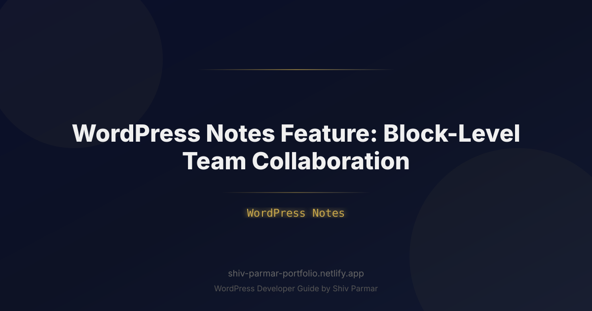

WordPress Notes Feature: Block-Level Team | Shiv Parmar
Table of Contents
For more than a decade, content teams have suffered through the tedious, fragmented "copy-paste dance." Writers draft articles in Google Docs, editors leave inline feedback across dozens of threads, and stakeholders approve layouts in Figma or Notion. Then, once the draft is finalized, someone is tasked with manually porting that content into the WordPress Block Editor (Gutenberg)—only to find that custom blocks, responsive alignments, metadata, and dynamic components break down in translation. Worse yet, last-minute design tweaks inside the editor happen completely outside the original review trail, introducing formatting errors and compliance risks.
The native WordPress Notes feature fundamentally transforms this dynamic. Born out of the ambitious Gutenberg Phase 3 roadmap (dedicated entirely to collaboration), block-level commenting brings the frictionless, asynchronous review mechanics of Google Docs and Figma directly into the core WordPress content canvas. Content creators, visual designers, SEO strategists, and enterprise legal teams no longer need to coordinate across disparate tools; they can highlight, annotate, discuss, and resolve feedback at the individual block level inside the WordPress admin.
Whether you manage a fast-paced digital newsroom, an agile agency delivering bespoke client sites, or an enterprise publishing pipeline, mastering block-level collaboration and review systems is the key to accelerating editorial velocity. In this comprehensive guide, we will examine the technical architecture of WordPress Notes, explore how it reinvents editorial workflows, walk through practical setup and developer customizations, and highlight best practices to keep your editorial pipeline secure, lean, and highly efficient.
What is the WordPress Notes Feature?
The WordPress Notes feature is an integrated, block-level commenting and feedback system built natively into the Gutenberg editor. Rather than treating a post or page as a monolithic block of HTML text with an isolated comment box at the bottom of the editing screen, Notes links contextual discussion threads directly to unique block instances—such as a specific Heading, an Image gallery, a Query Loop, or a custom Call-to-Action (CTA) block.
At its technical foundation, the system relies on block identifiers (persistent client IDs and block metadata) to anchor commentary. When an author, editor, or reviewer highlights text within a paragraph block or selects an entire parent group, they can summon a contextual comment bubble. Users can leave thoughts, tag team members via standard @mention syntax, assign action items, and formally mark revisions as resolved.
| Dimension | Legacy Editorial Review | Modern WordPress Notes |
|---|---|---|
| Contextual Granularity | Document-wide meta boxes or external docs. | Granular to specific blocks, nested layouts, and text selections. |
| Data Integrity | High risk of formatting loss during copy-paste migrations. | Zero data loss; feedback occurs on actual production markup. |
| Access Control | Third-party platform access must be synced manually. | Governed directly by native WordPress user roles and capabilities. |
| Visual Design Fidelity | Reviewers guess how raw text will look on dynamic layouts. | Reviews reflect real themes, CSS styling, and responsive states. |
| Audit Trail | Fragmented across email, Slack, and cloud documents. | Unified inside the WordPress database, exportable and auditable. |
Crucially, WordPress Notes are distinct from front-facing visitor comments. They exist strictly within the editorial interface and are accessible only to authenticated users with explicit review capabilities. The underlying data model separates internal annotations from public post content: comments are stored via dedicated REST API endpoints and linked to block IDs, ensuring that your production HTML on the front end remains completely pristine, semantic, and fast.
Why Block-Level Collaboration Matters in 2026
The maturation of Gutenberg into Phase 3 reflects how modern cross-functional teams operate. In 2026, content is no longer composed merely of text and static images; modern WordPress sites rely on complex block compositions, synchronized dynamic patterns, bespoke interactive components, and headless content distributions. Reviewing such intricate content architectures inside an external text processor is fundamentally obsolete.
Here is why native block-level collaboration is an imperative for enterprise content teams and forward-thinking agencies:
- Elimination of the "Fidelity Gap": When an editor reviews copy inside Google Docs, they cannot evaluate how a headline breaks across mobile viewports, how button microcopy fits inside a multi-column pricing pattern, or how a testimonial block meshes with surrounding media. Reviewing directly in the block canvas ensures visual, structural, and semantic accuracy simultaneously.
- Reduced Tool Sprawl and SaaS Overhead: Organizations spend significant budget managing third-party collaboration platforms. Consolidating the review pipeline inside WordPress minimizes licensing overhead and eliminates brittle custom API synchronizations between third-party apps and the CMS.
- Enhanced Security and Compliance: Enterprise organizations in healthcare, legal, and financial sectors often cannot legally store confidential pre-publication drafts on third-party cloud platforms due to data privacy or client confidentiality regulations. With WordPress Notes, all unreleased content, editorial discussions, and review trails remain fully contained within the organization’s secure, self-hosted or dedicated cloud infrastructure.
- Support for Asynchronous, Global Teams: With distributed teams working across time zones, real-time meetings for editorial sign-offs are impractical. Block-level threads allow copywriters, visual designers, SEO analysts, and compliance managers to leave targeted, asynchronous feedback without overwriting one another's work or introducing merge conflicts.
Step-by-Step Guide: Implementing and Mastering WordPress Notes
Mastering block-level team collaboration requires an understanding of how to configure the feature, establish clear review workflows, and programmatically customize behavior for specific user roles. Follow this comprehensive guide to deploy WordPress Notes across your organization.
1. Activating and Configuring the Notes Infrastructure
Depending on your WordPress installation, block-level collaboration features may be managed via the Gutenberg feature flags or native core settings. If you are developing custom themes or maintaining an enterprise environment, ensure your installation explicitly enables collaborative editing features.
To enable block collaboration support across custom post types, register your custom post type with full REST API support and the necessary editorial metadata capabilities in your theme's functions.php or within a site-specific mu-plugin:
<?php
/**
* Registering a custom post type with full Block Notes support.
*/
function enterprise_register_briefs_cpt() {
$labels = array(
'name' => _x( 'Editorial Briefs', 'post type general name', 'enterprise-collab' ),
'singular_name' => _x( 'Editorial Brief', 'post type singular name', 'enterprise-collab' ),
'menu_name' => _x( 'Briefs', 'admin menu', 'enterprise-collab' ),
'add_new_item' => __( 'Add New Brief', 'enterprise-collab' ),
'edit_item' => __( 'Edit Brief', 'enterprise-collab' ),
);
$args = array(
'labels' => $labels,
'public' => false,
'publicly_queryable' => false,
'show_ui' => true,
'show_in_menu' => true,
'query_var' => true,
'rewrite' => array( 'slug' => 'briefs' ),
'capability_type' => 'post',
'has_archive' => false,
'hierarchical' => false,
'menu_position' => 20,
'supports' => array( 'title', 'editor', 'author', 'revisions', 'custom-fields' ),
'show_in_rest' => true, // Mandatory for Block Editor & Notes API
);
register_post_type( 'editorial_brief', $args );
}
add_action( 'init', 'enterprise_register_briefs_cpt' );
2. Navigating the Collaboration Canvas: Adding and Replying to Notes
Once you are within the Block Editor, engaging with the Notes system follows an intuitive, context-driven workflow:
- Select the Target Block: Click on any block—whether it is a simple Paragraph, an Image, or a complex Group block containing child elements.
- Access the Note Tool: In the floating Block Toolbar, click the Add Note (speech bubble) icon, or use the universal keyboard shortcut (
Ctrl + Alt + Mon Windows,Cmd + Option + Mon macOS). - Draft Your Comment: A floating card appears adjacent to the block boundary. Type your review comment. To direct your query to a specific colleague, type
@followed by their WordPress username. An auto-suggest list will query eligible users on the platform. - Submit the Note: Click Comment. The block now displays a persistent indicator in the document margins, signaling to other editors that an active feedback thread exists.
- Threaded Discussions: Other team members can view the note, type replies in the thread, or click the checkmark icon to mark the thread as Resolved once the requested updates are implemented.
3. Managing Access Control and Editorial Roles via PHP
Not every registered user should have the authority to leave, resolve, or view editorial notes. For example, external freelance contributors might have permission to write posts but should not be allowed to resolve internal legal sign-offs. Conversely, executive stakeholders might require review-only capabilities without the ability to inadvertently scramble layout blocks.
You can define granular permissions using custom capabilities and WordPress role management:
<?php
/**
* Setup Granular Permissions for WordPress Notes and Reviews.
*/
function enterprise_configure_notes_capabilities() {
// Grant full review and resolution capabilities to Editors and Administrators
$roles_with_full_access = array( 'editor', 'administrator' );
foreach ( $roles_with_full_access as $role_name ) {
$role = get_role( $role_name );
if ( $role ) {
$role->add_cap( 'read_block_notes' );
$role->add_cap( 'create_block_notes' );
$role->add_cap( 'resolve_block_notes' );
$role->add_cap( 'delete_any_block_notes' );
}
}
// Grant restricted review capabilities to Authors and Contributors
$restricted_roles = array( 'author', 'contributor' );
foreach ( $restricted_roles as $role_name ) {
$role = get_role( $role_name );
if ( $role ) {
$role->add_cap( 'read_block_notes' );
$role->add_cap( 'create_block_notes' );
// Explicitly deny resolving or deleting others' notes
$role->remove_cap( 'resolve_block_notes' );
$role->remove_cap( 'delete_any_block_notes' );
}
}
}
add_action( 'admin_init', 'enterprise_configure_notes_capabilities' );
| Role | Read Notes | Create Notes | Resolve Notes | Delete Any Note |
|---|---|---|---|---|
| Administrator | Yes | Yes | Yes | Yes |
| Editor | Yes | Yes | Yes | Yes |
| Author | Yes | Yes | No (Requires Review) | No |
| Reviewer / Legal (Custom) | Yes | Yes | Yes | No |
4. Automating Webhook Notifications for Block-Level Mentions
Feedback is only as fast as the notification loop alerting users. While WordPress provides built-in email alerts for direct mentions, modern workflows demand real-time notifications in platforms like Slack, Discord, or Microsoft Teams.
You can hook into the note creation action via PHP and push contextual payloads to external webhooks, allowing editors to jump directly into the relevant block using deep links:
<?php
/**
* Dispatch an external Slack alert when an author is mentioned in a block note.
*/
function enterprise_dispatch_slack_note_notification( $note_id, $note_data ) {
$webhook_url = 'https://hooks.slack.com/services/YOUR/CUSTOM/WEBHOOK';
// Extract mentioned users matching pattern @username
preg_match_all( '/@([a-zA-Z0-9_\-]+)/', $note_data['content'], $matches );
if ( empty( $matches[1] ) ) {
return; // No user tagged, exit early
}
$post_title = get_the_title( $note_data['post_id'] );
$edit_url = admin_url( sprintf( 'post.php?post=%d&action=edit#block-%s', $note_data['post_id'], $note_data['block_id'] ) );
$author = wp_get_current_user()->display_name;
$payload = array(
'text' => sprintf(
":memo: *New Block Note from %s*\n*Post:* <%s|%s>\n*Feedback:* %s\n*Tagged Users:* %s",
esc_html( $author ),
esc_url( $edit_url ),
esc_html( $post_title ),
esc_html( $note_data['content'] ),
implode( ', ', array_map( 'sanitize_text_field', $matches[1] ) )
)
);
wp_remote_post( $webhook_url, array(
'method' => 'POST',
'timeout' => 5,
'headers' => array( 'Content-Type' => 'application/json' ),
'body' => wp_json_encode( $payload ),
'data_format' => 'body',
) );
}
add_action( 'wp_create_block_note', 'enterprise_dispatch_slack_note_notification', 10, 2 );
5. Programmatically Interacting with Block Notes via JavaScript
Developers creating bespoke blocks or custom editorial sidebars often need to inspect active notes or dispatch comments programmatically. Using Gutenberg's @wordpress/data store, you can query notes associated with any selected block.
Here is an example script demonstrating how to subscribe to block selections and retrieve associated collaboration data via the Block Editor JavaScript API:
import { subscribe, select, dispatch } from '@wordpress/data';
// Keep track of the currently inspected block
let activeBlockId = null;
const unsubscribe = subscribe( () => {
const editor = select( 'core/block-editor' );
const notesStore = select( 'core/notes' ); // Core Gutenberg collaboration data store
if ( ! editor || ! notesStore ) {
return;
}
const selectedBlockClientId = editor.getSelectedBlockClientId();
if ( selectedBlockClientId && selectedBlockClientId !== activeBlockId ) {
activeBlockId = selectedBlockClientId;
// Retrieve persistent block attributes
const block = editor.getBlock( activeBlockId );
if ( block ) {
// Fetch all notes tied to this specific block instance
const blockNotes = notesStore.getNotesForBlock( activeBlockId );
if ( blockNotes && blockNotes.length > 0 ) {
console.log( `[Collaboration Engine] Block "${block.name}" has ${blockNotes.length} active notes.` );
blockNotes.forEach( ( note ) => {
console.log( `- [${note.status}] ${note.authorName}: ${note.content}` );
} );
}
}
}
} );
Best Practices for Block-Level Collaboration
Deploying block-level team collaboration technology without established protocols can result in disorganized comment threads and editorial bottlenecks. To extract the highest return from WordPress Notes, implement these operational standards across your team:
1. Establish Block-Locking Protocols for Approved Elements
Once an editor or compliance officer leaves a note and signs off on a complex pattern (such as a legal disclaimer, hero layout, or structured data module), use Gutenberg’s native Block Locking APIs alongside Notes. Restricting the editing or movement of a block after sign-off guarantees that visual and copy revisions remain synchronized throughout the rest of the publication cycle.
2. Standardize Annotation Taxonomies
Encourage your reviewers to use standardized prefixes at the start of their notes to clarify priority and intent instantly. For example:
- [BLOCKER]: Mandatory legal, accuracy, or major design changes that halt publishing.
- [SEO]: Recommendations for keyword placement, image alt text, or heading hierarchy changes.
- [COPY]: Minor phrasing, grammatical, or readability recommendations.
- [OPTIONAL]: Stylistic ideas that the original author may accept or reject at their discretion.
3. Enforce "Zero Open Notes" Publishing Gates
Do not rely on informal human checks to verify whether all comments have been addressed. Build or configure pre-publish checklists that inspect the post's active notes store. If any unresolved notes with a [BLOCKER] prefix remain on any block within the layout, disable the primary "Publish" button and prompt the user to resolve all pending threads first.
4. Keep the Comments Database Clean
While editorial notes provide an invaluable revision history during drafting, storing tens of thousands of resolved, transient notes across years of high-volume publishing can cause unnecessary database bloat. Implement an automated maintenance routine that archives or purges resolved notes from posts that have been published for more than 90 days.
Common Mistakes to Avoid
Integrating a completely new feedback modality into an established editorial team can surface unique friction points. Avoid these common pitfalls when executing your WordPress review strategy:
Treating Notes as a Full Replacement for Post Revisions
A note is a conversation, not a historical backup. Writers and editors sometimes make destructive, experimental modifications across a block group while leaving notes explaining their intent. Always instruct your team to lean on WordPress’s core Revisions engine alongside Notes. If an extensive structural rewrite is required, duplicate the block into a draft group or create a post fork rather than relying solely on comments to piece together older iterations.
Neglecting Block Inheritance and Parent/Child Contexts
Gutenberg relies heavily on nested block structures—such as a Column block nested within a Columns block, which in turn lives inside a full-width Cover or Group block. A frequent mistake reviewers make is leaving a general layout note on a tiny inner child Paragraph block rather than the container parent block. When the inner paragraph is removed or replaced, the contextual note can be accidentally orphaned or deleted. Always teach reviewers to select the overarching parent block when commenting on global layout, spacing, or structure.
Bypassing Mobile Viewport Checks During the Review
Because notes are pinned neatly in the margins of desktop displays, reviewers frequently evaluate content exclusively on large screens. However, a multi-column pattern or customized table block that receives glowing comments on desktop might fail completely on mobile screens. Ensure reviewers toggle the editor’s built-in preview modes (Mobile and Tablet) to test that requested changes render gracefully across every responsive breakpoint.
Failing to Designate a Single "Closing Authority"
When multiple contributors can freely resolve threads, miscommunication is inevitable. A common problem occurs when an author marks a critical legal note as "Resolved" simply because they modified the text, without giving the original commenter a chance to verify the change. Establish a firm editorial rule: only the person who created the note (or a designated Managing Editor) possesses the authority to officially click "Resolve."
Conclusion
The introduction of the WordPress Notes feature marks a significant leap forward for editorial workflows and site building. By anchoring feedback directly to specific Gutenberg blocks, it eliminates the friction of fragmented communication channels and external markup documents. Embracing this level of real-time collaboration inside the block editor transforms the entire content review process, ensuring that writers, editors, and designers stay aligned with unmatched context and precision.
As the block editor matures into an all-in-one publishing ecosystem, utilizing native collaboration tools will be essential for modern digital teams. Streamlining your review cycles directly within WordPress not only saves valuable project hours but also reduces human error when translating revisions into published content. Adopting WordPress Notes is a straightforward step toward a more unified, productive content management strategy.
If you need expert assistance fine-tuning your publishing workflows, developing custom blocks, or scaling your enterprise web solutions, Shiv Parmar is available for WordPress development work worldwide. Get in touch today to elevate your WordPress platform with tailored, high-performance solutions.